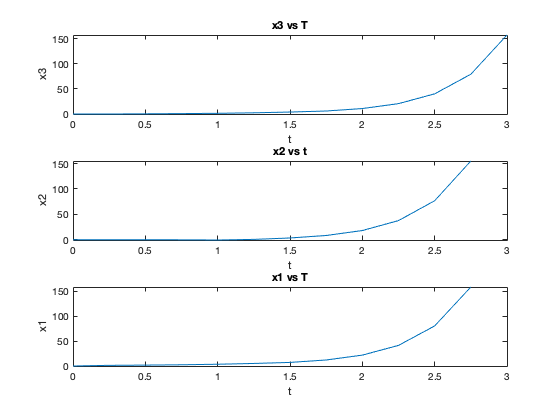
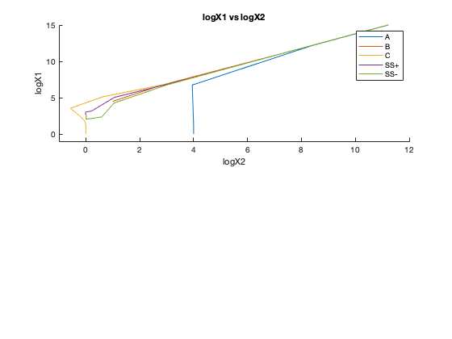
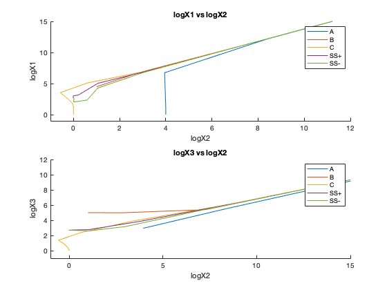

Contents
clear all; clc; close all;
s = 77.27;
w = 0.1610;
q = 8.375E-6;
e = 1;
x1 = 488.178;
x2 = 0.99796;
x3 = 488.178;
PART A
f1 = s*(x2 - x2*x1 + x1 - q*x1^2)
f2 = s^-1*(-x2 - x2*x1 + e*x3)
f3 = w*(x1 - x3)
disp('Values are close to 0 and if you solve the system of equations, you get a similar value for x1, x2, x3')
f1 =
-0.1598
f2 =
-2.6878e-05
f3 =
0
Values are close to 0 and if you solve the system of equations, you get a similar value for x1, x2, x3
PART B
x1 = 1; x2 = 10000; x3 = 1000;
A = [
s*(-x2+1-2*q*x1), s*(1-x1), 0;
-x2/s, (-1-x1)/s, e/s;
w, 0, -w
]
eigA = eig(A)
x1 = 31623; x2 = 10; x3 = 100000;
B = [
s*(-x2+1-2*q*x1), s*(1-x1), 0;
-x2/s, (-1-x1)/s, e/s;
w, 0, -w
];
eigB = eig(B)
x1 = 1; x2 = 1; x3 = 1;
C = [
s*(-x2+1-2*q*x1), s*(1-x1), 0;
-x2/s, (-1-x1)/s, e/s;
w, 0, -w
];
eigC = eig(C)
x1 = 488.178; x2 = 0.99796; x3 = 488.178;
D = [
s*(-x2+1-2*q*x1), s*(1-x1), 0;
-x2/s, (-1-x1)/s, e/s;
w, 0, -w
];
eigEquilibrium = eig(D)
stiff1 = min(eigA) / max(eigA)
stiff2 = abs(eigB(1)/eigB(3))
stiff3 = abs(eigC(2)/eigC(3))
stiffEquilibrium = abs(max(eigEquilibrium) / min(eigEquilibrium))
A =
1.0e+05 *
-7.7262 0 0
-0.0013 -0.0000 0.0000
0.0000 0 -0.0000
eigA =
1.0e+05 *
-0.0000
-0.0000
-7.7262
eigB =
1.0e+03 *
-1.1585
0.0125
0.0002
eigC =
-0.0259
-0.1610
-0.0013
eigEquilibrium =
-25.7146
18.7473
0.0013
stiff1 =
2.9850e+07
stiff2 =
6.2024e+03
stiff3 =
124.3942
stiffEquilibrium =
0.7291
PART C
tfinal=400;
T=0.25;
t=[0:T:tfinal];
N=length(t);
a1=-1;
a0=0;
b1=3/2;
b0=1/2;
x1=zeros(3,N);
x2=zeros(3,N);
x3=zeros(3,N);
xd1=zeros(3,N);
xd2=zeros(3,N);
f1=x1;
f2=x2;
f3=x3;
fd1=xd1;
fd2=xd2;
aArr(:,1)=[1 10000 1000];
bArr(:,1)=[31623 10 100000];
cArr(:,1)=[1 1 1];
ssPlusArr(:,1)=[500 0.99796 488.178];
ssMinusArr(:,1)=[475 0.99796 488.178];
k=1;
f1(1,k)=s*(aArr(2,k)-aArr(2,k)*aArr(1,k)+aArr(1,k)-q*aArr(1,k)^2);
f2(1,k)=s*(bArr(2,k)-bArr(2,k)*bArr(1,k)+bArr(1,k)-q*bArr(1,k)^2);
f3(1,k)=s*(cArr(2,k)-cArr(2,k)*cArr(1,k)+cArr(1,k)-q*cArr(1,k)^2);
fd1(1,k)=s*(ssPlusArr(2,k)-ssPlusArr(2,k)*ssPlusArr(1,k)+ssPlusArr(1,k)-q*ssPlusArr(1,k)^2);
fd2(1,k)=s*(ssMinusArr(2,k)-ssMinusArr(2,k)*ssMinusArr(1,k)+ssMinusArr(1,k)-q*ssMinusArr(1,k)^2);
f1(2,k)=(1/s)*(-aArr(2,k)-aArr(2,k)*aArr(1,k)+e*aArr(3,k));
f2(2,k)=(1/s)*(-bArr(2,k)-bArr(2,k)*bArr(1,k)+e*bArr(3,k));
f3(2,k)=(1/s)*(-cArr(2,k)-cArr(2,k)*cArr(1,k)+e*cArr(3,k));
fd1(2,k)=(1/s)*(-ssPlusArr(2,k)-ssPlusArr(2,k)*ssPlusArr(1,k)+e*ssPlusArr(3,k));
fd2(2,k)=(1/s)*(-ssMinusArr(2,k)-ssMinusArr(2,k)*ssMinusArr(1,k)+e*ssMinusArr(3,k));
f1(3,k)=w*(aArr(1,k)-aArr(3,k));
f2(3,k)=w*(bArr(1,k)-bArr(3,k));
f3(3,k)=w*(cArr(1,k)-cArr(3,k));
fd1(3,k)=w*(ssPlusArr(1,k)-ssPlusArr(3,k));
fd2(3,k)=w*(ssMinusArr(1,k)-ssMinusArr(3,k));
aArr(:,2)=aArr(:,1)+T*f1(:,1);
bArr(:,2)=bArr(:,1)+T*f2(:,1);
cArr(:,2)=cArr(:,1)+T*f3(:,1);
ssPlusArr(:,2)=ssPlusArr(:,1)+T*fd1(:,1);
ssMinusArr(:,2)=ssMinusArr(:,1)+T*fd2(:,1);
for k=2:N-1
f1(1,k)=s*(aArr(2,k)-aArr(2,k)*aArr(1,k)+aArr(1,k)-q*aArr(1,k)^2);
f2(1,k)=s*(bArr(2,k)-bArr(2,k)*bArr(1,k)+bArr(1,k)-q*bArr(1,k)^2);
f3(1,k)=s*(cArr(2,k)-cArr(2,k)*cArr(1,k)+cArr(1,k)-q*cArr(1,k)^2);
fd1(1,k)=s*(ssPlusArr(2,k)-ssPlusArr(2,k)*ssPlusArr(1,k)+ssPlusArr(1,k)-q*ssPlusArr(1,k)^2);
fd2(1,k)=s*(ssMinusArr(2,k)-ssMinusArr(2,k)*ssMinusArr(1,k)+ssMinusArr(1,k)-q*ssMinusArr(1,k)^2);
f1(2,k)=(1/s)*(-aArr(2,k)-aArr(2,k)*aArr(1,k)+e*aArr(3,k));
f2(2,k)=(1/s)*(-bArr(2,k)-bArr(2,k)*bArr(1,k)+e*bArr(3,k));
f3(2,k)=(1/s)*(-cArr(2,k)-cArr(2,k)*cArr(1,k)+e*cArr(3,k));
fd1(2,k)=(1/s)*(-ssPlusArr(2,k)-ssPlusArr(2,k)*ssPlusArr(1,k)+e*ssPlusArr(3,k));
fd2(2,k)=(1/s)*(-ssMinusArr(2,k)-ssMinusArr(2,k)*ssMinusArr(1,k)+e*ssMinusArr(3,k));
f1(3,k)=w*(aArr(1,k)-aArr(3,k));
f2(3,k)=w*(bArr(1,k)-bArr(3,k));
f3(3,k)=w*(cArr(1,k)-cArr(3,k));
fd1(3,k)=w*(ssPlusArr(1,k)-ssPlusArr(3,k));
fd2(3,k)=w*(ssMinusArr(1,k)-ssMinusArr(3,k));
aArr(:,k+1)=T*b1*f1(:,k)+T*b0*f1(:,k-1)-a1*aArr(:,k)-a0*aArr(:,k-1);
bArr(:,k+1)=T*b1*f2(:,k)+T*b0*f2(:,k-1)-a1*bArr(:,k)-a0*bArr(:,k-1);
cArr(:,k+1)=T*b1*f3(:,k)+T*b0*f3(:,k-1)-a1*cArr(:,k)-a0*cArr(:,k-1);
ssPlusArr(:,k+1)=T*b1*fd1(:,k)+T*b0*fd1(:,k-1)-a1*ssPlusArr(:,k)-a0*ssPlusArr(:,k-1);
ssMinusArr(:,k+1)=T*b1*fd2(:,k)+T*b0*fd2(:,k-1)-a1*ssMinusArr(:,k)-a0*ssMinusArr(:,k-1);
end
PART C1
figure()
subplot(3,1,1)
plot(t,log10(cArr(3,:)))
xlabel('t')
ylabel('x3')
title('x3 vs T');
subplot(3,1,2)
plot(t,log10(cArr(2,:)))
xlabel('t')
ylabel('x2')
title('x2 vs t');
subplot(3,1,3)
plot(t,log10(cArr(1,:)))
xlabel('t')
ylabel('x1')
title('x1 vs T');
Warning: Imaginary parts of complex X and/or Y arguments ignored
Warning: Imaginary parts of complex X and/or Y arguments ignored
Warning: Imaginary parts of complex X and/or Y arguments ignored

PART C2
figure()
subplot(2,1,1)
hold on
plot(log10(aArr(2,:)),log10(aArr(1,:)))
plot(log10(bArr(2,:)),log10(bArr(1,:)))
plot(log10(cArr(2,:)),log10(cArr(1,:)))
plot(log10(ssPlusArr(2,:)),log10(ssPlusArr(1,:)))
plot(log10(ssMinusArr(2,:)),log10(ssMinusArr(1,:)))
hold off
legend('A','B','C','SS+','SS-')
xlabel('logX2')
ylabel('logX1')
title('logX1 vs logX2')
axis([-1 12 -1 15])
Warning: Imaginary parts of complex X and/or Y arguments ignored
Warning: Imaginary parts of complex X and/or Y arguments ignored
Warning: Imaginary parts of complex X and/or Y arguments ignored
Warning: Imaginary parts of complex X and/or Y arguments ignored
Warning: Imaginary parts of complex X and/or Y arguments ignored

PART C3
subplot(2,1,2)
hold on
plot(log10(aArr(2,:)),log10(aArr(3,:)))
plot(log10(bArr(2,:)),log10(bArr(3,:)))
plot(log10(cArr(2,:)),log10(cArr(3,:)))
plot(log10(ssPlusArr(2,:)),log10(ssPlusArr(3,:)))
plot(log10(ssMinusArr(2,:)),log10(ssMinusArr(3,:)))
hold off
legend('A','B','C','SS+','SS-')
xlabel('logX2')
ylabel('logX3')
title('logX3 vs logX2')
axis([-1 15 -1 12])
Warning: Imaginary parts of complex X and/or Y arguments ignored
Warning: Imaginary parts of complex X and/or Y arguments ignored
Warning: Imaginary parts of complex X and/or Y arguments ignored
Warning: Imaginary parts of complex X and/or Y arguments ignored
Warning: Imaginary parts of complex X and/or Y arguments ignored
